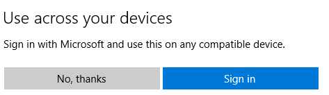

Linux is my main development environment but I also need to test things on Windows. My computer boots into Windows 10 and then I run a Linux VM. Today I was trying to setup a Windows 7 VM to build an installer. The VM was running on a remote host and I was connecting to it with virt-manager.
For some reason it was making my local Linux VM very sluggish and it was taking minutes to update the mouse position on the remote VM with virt-manager.
So I decided to see if I could run virt-manager on my Windows 10 host but there is no Windows installer for it.
I did find this ServerFault answer https://serverfault.com/a/840962 about using the Windows Subshell for Linux and I was able to get it working.
Here is what I had to do.
Following this https://docs.microsoft.com/en-us/windows/wsl/install-win10
Open PowerShell as Administrator and run:
Enable-WindowsOptionalFeature -Online -FeatureName Microsoft-Windows-Subsystem-Linux
Don't restart just yet.
Install your distro by going to https://aka.ms/wslstore
You have to install it through the Windows Store but don't worry you don't need an account. When it asks you to sign in just say No, Thanks as it is already installing.

It will be available in the Start Menu under the name of the distribution you chose, Ubuntu for me.
First I made sure it was up to date and was able to fetch programs. This might take a while to download and install the updates so you can jump ahead.
sudo apt update
sudo apt upgrade
Then I installed the program I want to launch.
sudo apt install virt-manager
Download and install it from here https://sourceforge.net/projects/xming/.
In order to run Linux GUI Applications Xming needs to be running.
To run Xming on startup, you need to add a shortcut to the Startup directory.
shell:startup and then EnterNow Xming will start automatically when Windows 10 starts.
In Linux set the display to use Xming.
export DISPLAY=localhost:0.0
To have it be the default add that line to ~/.bashrc which will run it on login.
echo 'export DISPLAY=localhost:0.0' >> ~/.bashrc
Now you can just run it in the Linux GUI application in the terminal with a &.
$ virt-manager &
And if it works. Yah!
Since virt-manager needs to connect to a remote computer I had to install ssh-askpass.
sudo apt install ssh-askpass
I also created a keypair and uploaded my public key to the remote computer.
ssh-keygen -t rsa -C "email@example.com"
ssh-copy-id $user@$host
And now I can use virt-manager from Windows 10 and it works great.